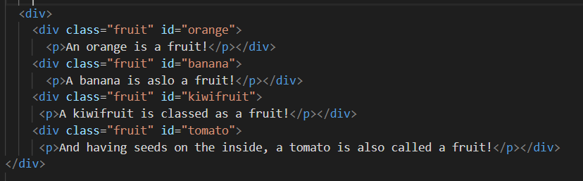
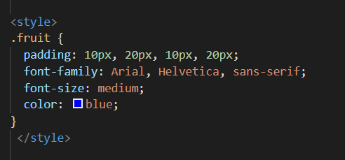

A class is an attribute is a name given in HTML, CSS or JavaScript where a group of like objects are given a reference name, to group like things together e.g. different types of fruit. We would class them all like this inline in HTML
Figure 1. Inline styling showing class & id
If you’re in the CSS, you would use a dot (.) in front of the name to decipher that this would be for a styling set of instructions for a class (in this instance called fruit)
Figure 2. – Class uses . before the class name
An ‘id’ is given to an attribute to decipher it’s difference among the class – refer back to Figure 1. All the fruit are grouped together in a class called ‘.fruit’ but we can also identify what each individual fruit is called. E.g. ‘id=orange, banana, kiwifruit or tomato’ By using the unique id in the CSS, we refer to an id using the # symbol in front of the id name. By doing this, we can manipulate the styling for that individual id as well as keeping the styling the same for the entire class.

Figure 3 – id uses Hashtag Symbol